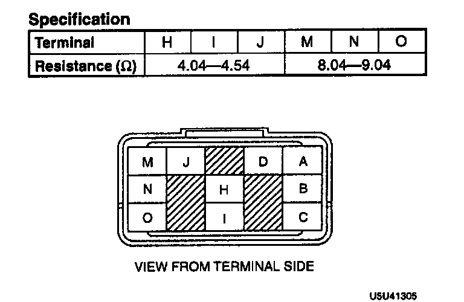

Solenoid Valve Body
SOLENOID VALVE INSPECTION INCLUDING THE VALVE RELAY1. Turn the ignition switch off.
2. Disconnect the ABS hydraulic unit connector (10 pin).

3. Apply 12 V between terminal A and D. Measure the resistance between terminal B and the following terminals at the ABS hydraulic unit connector (10 pin).
4. If not as specified, inspect the valve relay and solenoid valves.
SOLENOID VALVE INSPECTION
1. Remove the ABS hydraulic unit.

2. Remove the valve relay. Measure the resistance between terminal X at the valve relay terminal and the following terminals at the ABS hydraulic unit connector.
3. If not as specified, repair the harness or replace the ABS hydraulic unit as necessary.